Cookery
CAP Cuisine. Sixteen English words of the trade: tools, objects and everyday gestures. Open to everyone.
Four steps: from French to English, listen and choose, match, and complete a sentence at work. The Listen button reads the word in British English.
Word list
| Image | Français | English | Audio |
|---|---|---|---|
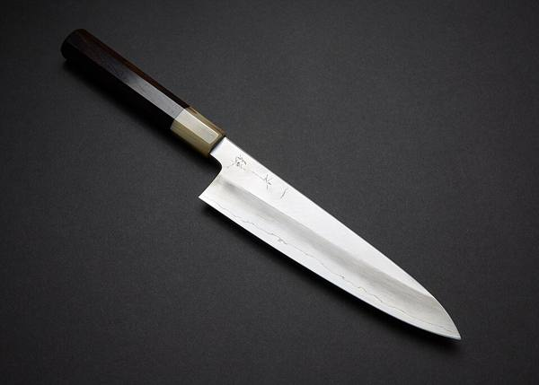 | le couteau de chef | chef's knife | |
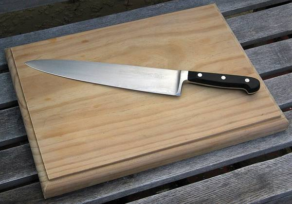 | la planche à découper | chopping board | |
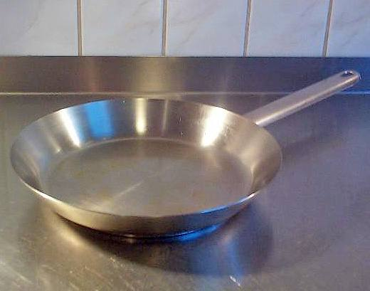 | la poêle | frying pan | |
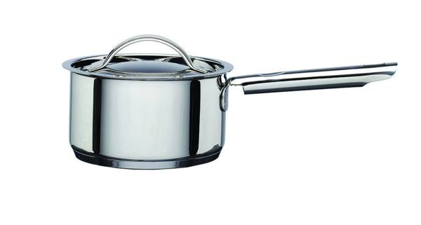 | la casserole | saucepan | |
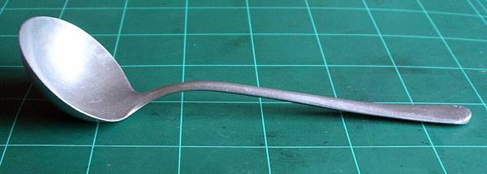 | la louche | ladle | |
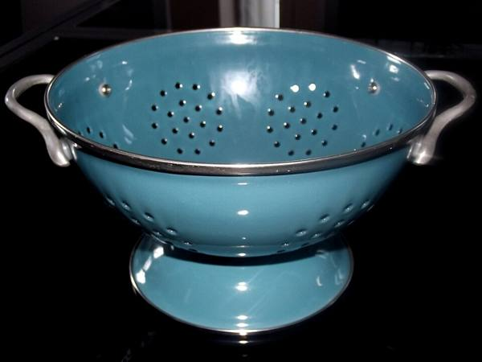 | la passoire | colander | |
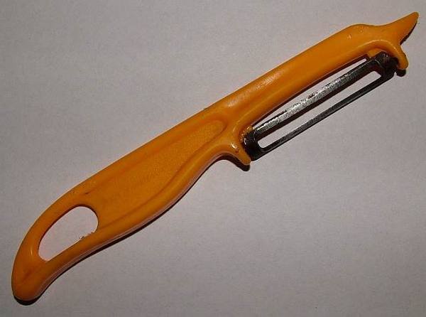 | l'économe | peeler | |
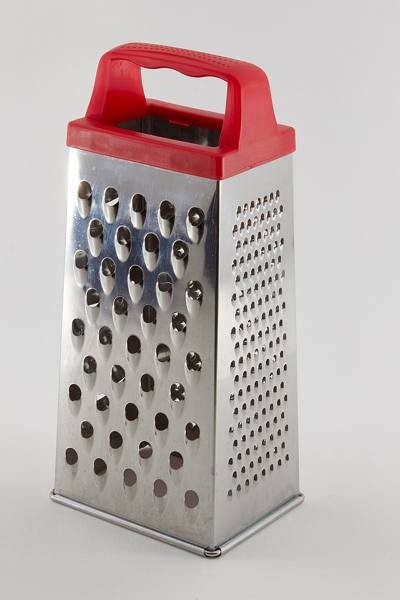 | la râpe | grater | |
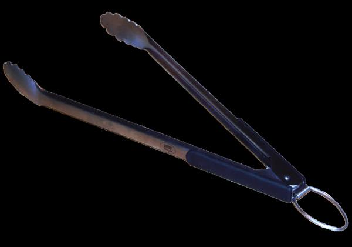 | la pince | tongs | |
 | le tablier | apron | |
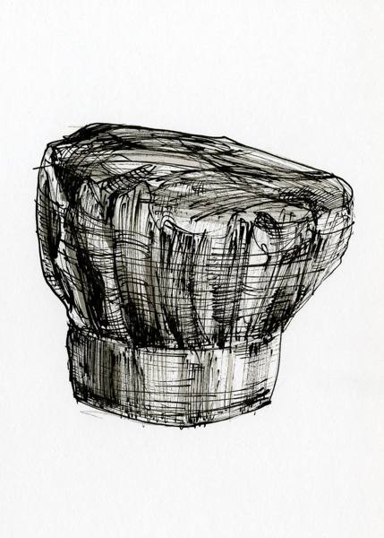 | la toque | chef's hat | |
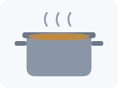 | le fond | stock | |
| la recette | recipe | ||
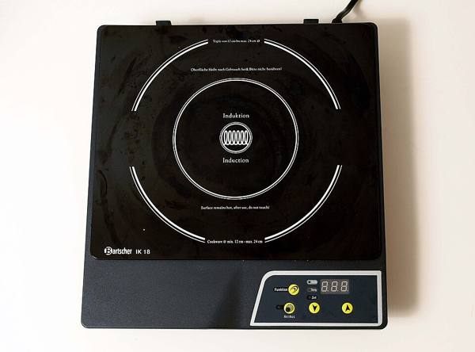 | la plaque de cuisson | hob | |
 | la chambre froide | cold room | |
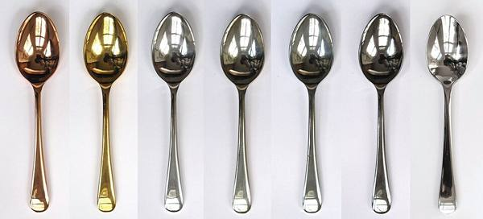 | la cuillère de dégustation | tasting spoon |
Teacher key: sentences at work
- Peel the potatoes with the ________. (peeler)
- Drain the pasta in the ________. (colander)
- Serve the soup with a ________. (ladle)
- Fry the onions in the ________. (frying pan)
- Read the ________ before you start. (recipe)
- Grate the cheese with the ________. (grater)
In steps 1, 2 and 3, the right answer is the line in the word list.
Image credits
Photos under an open licence, from Wikimedia Commons, resized for the phone. Original drawings for gestures and ideas.
- le couteau de chef (chef's knife) : photo by Frank Schulenburg, licence CC BY-SA 4.0, file page on Wikimedia Commons.
- la planche à découper (chopping board) : photo by Donovan Govan., licence CC BY-SA 3.0, file page on Wikimedia Commons.
- la poêle (frying pan) : photo by Téléversé par Soerfm (Wikimedia Commons), licence Public domain, file page on Wikimedia Commons.
- la casserole (saucepan) : photo by Cooks & Kitchens from Darlington, UK, licence CC BY 2.0, file page on Wikimedia Commons.
- la louche (ladle) : photo by self, licence Public domain, file page on Wikimedia Commons.
- la passoire (colander) : photo by FAP, licence CC BY-SA 3.0, file page on Wikimedia Commons.
- l'économe (peeler) : photo by Phil Wardle, licence Public domain, file page on Wikimedia Commons.
- la râpe (grater) : photo by Superbass, licence CC BY-SA 4.0, file page on Wikimedia Commons.
- la pince (tongs) : photo by Sac86738 at English Wikipedia, licence Public domain, file page on Wikimedia Commons.
- le tablier (apron) : photo by David Ring, licence CC0, file page on Wikimedia Commons.
- la toque (chef's hat) : photo by David Ring, licence CC0, file page on Wikimedia Commons.
- le fond (stock) : original drawing, Itinéraires et destinations, CC BY-NC-SA 4.0.
- la recette (recipe) : original drawing, Itinéraires et destinations, CC BY-NC-SA 4.0.
- la plaque de cuisson (hob) : photo by Pic p ter, licence CC BY 3.0, file page on Wikimedia Commons.
- la chambre froide (cold room) : original drawing, Itinéraires et destinations, CC BY-NC-SA 4.0.
- la cuillère de dégustation (tasting spoon) : photo by Zoe Lauighlin, licence CC BY-SA 4.0, file page on Wikimedia Commons.
Vocabulary sheet to print
Large type (16 point minimum), in three formats: